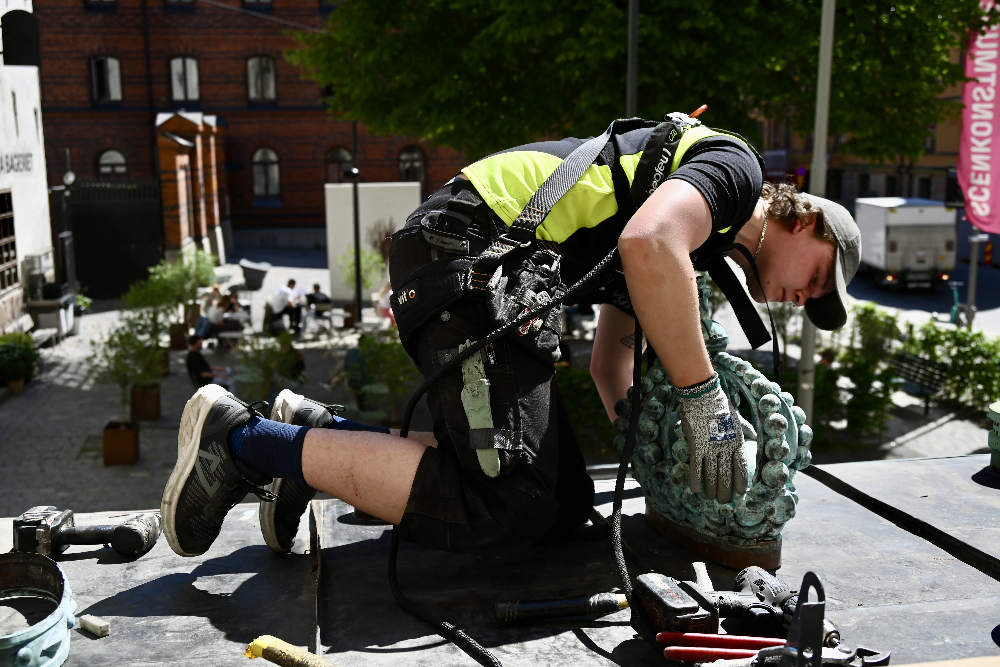
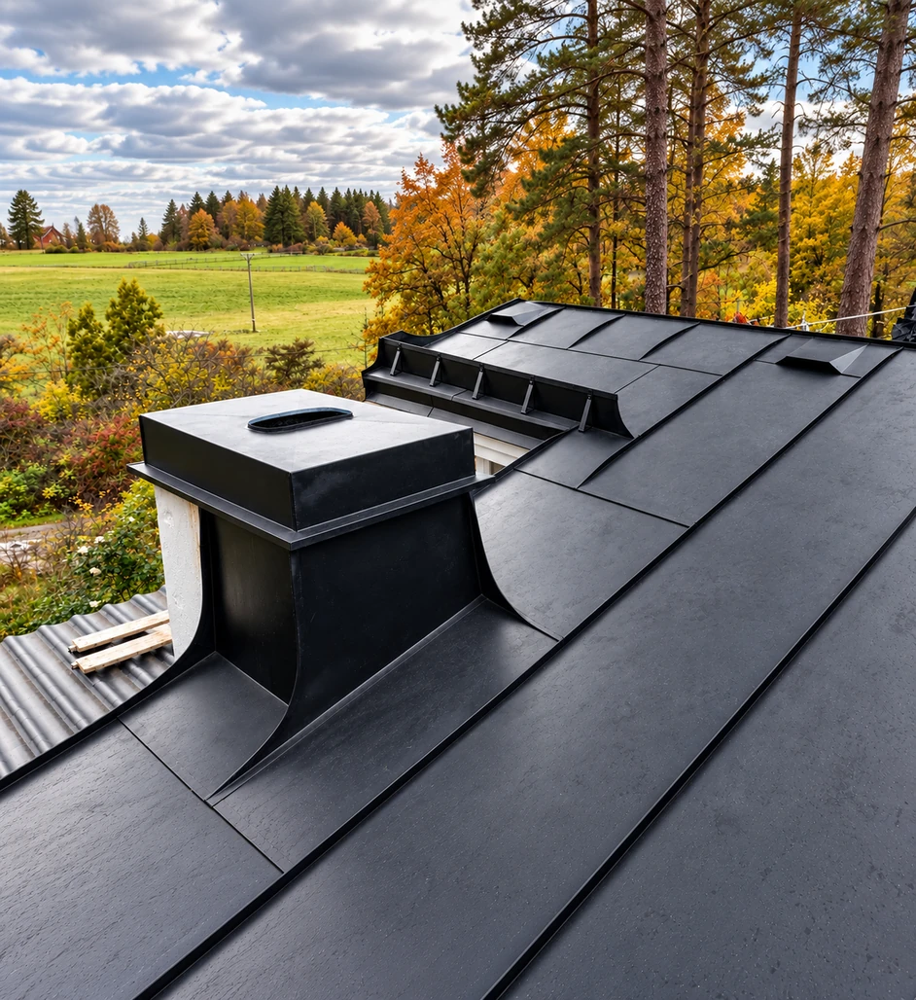
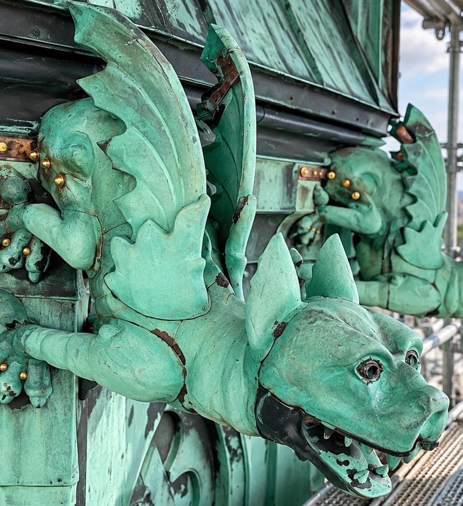
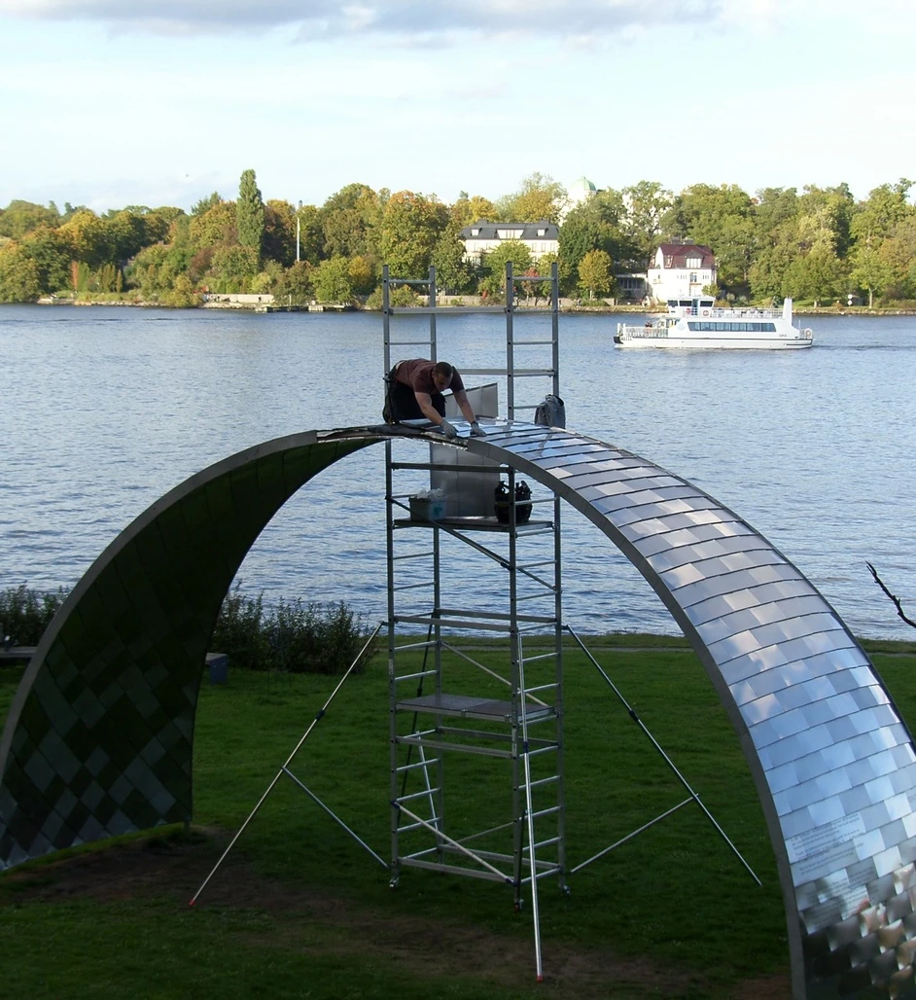
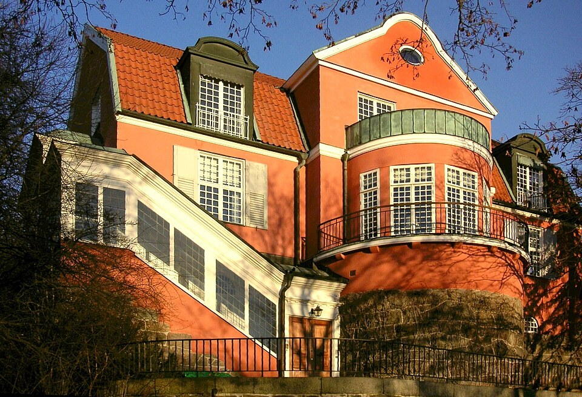
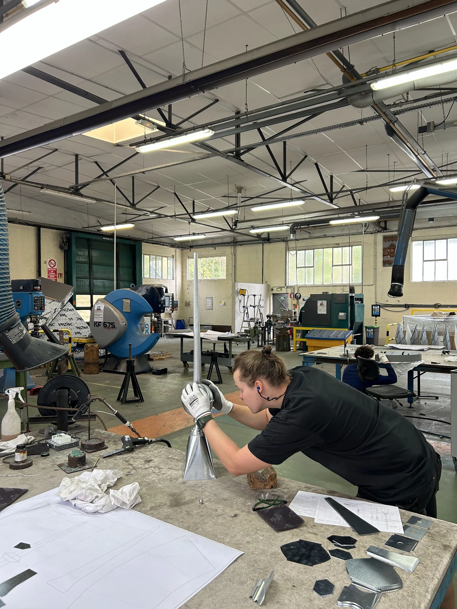
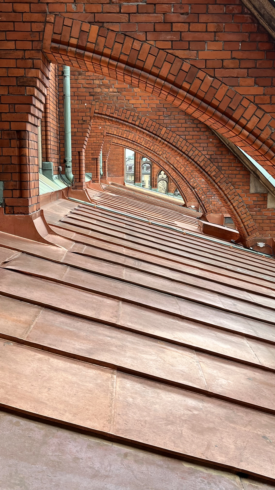

Fiktiv referens
Arbetsledare, Berg & Co.
Ett mycket noggrant arbete med stor känsla för detaljer och det traditionella hantverket.
Villa Bergabo
När du anlitar J. Norberg Plåtslageri AB har du direkt kontakt med den som utför arbetet – från offert till faktura. Det innebär att kunskap, erfarenhet och känsla för hantverket följer med genom hela projektet, utan onödiga mellanhänder eller informationsvägar där missförstånd kan uppstå.
Varje projekt genomförs med resultatet som högsta prioritet. Genom stor noggrannhet, känsla för de små detaljerna och respekt för det traditionella hantverket utför jag varje arbete med yrkesstolthet och höga krav på kvalitet.


Traditionellt byggnadsplåtslageri med fokus på noggrant utförande, hållbarhet och detaljer.
Tillverkning och bearbetning av koppar för tak, fasader och arkitektoniska detaljer.

Restaurering av äldre och kulturhistoriska byggnader med respekt för originalets uttryck.

Specialanpassade arbeten där traditionellt hantverk möter unika arkitektoniska lösningar.


Just nu arbetar jag med restaureringen av koppardetaljerna på Villa Bergabo på Södra Djurgården. Arbetet omfattar demontering av den befintliga kopparen, renovering och anpassning av underlaget samt återmontering av detaljerna.
Läs mer om Villa Bergabo →
Här kommer information om J. Norbergs gesällbrev, utbildning, yrkeserfarenhet, deltagande i SM och andra meriter inom plåtslageriet att presenteras. Sektionen kommer även att berätta mer om utbildningsresor, erfarenheter och vägen genom yrket.
Läs mer om J. Norberg →
Har du ett projekt inom plåt, koppar eller restaurering? Kontakta mig gärna för att diskutera arbetet.